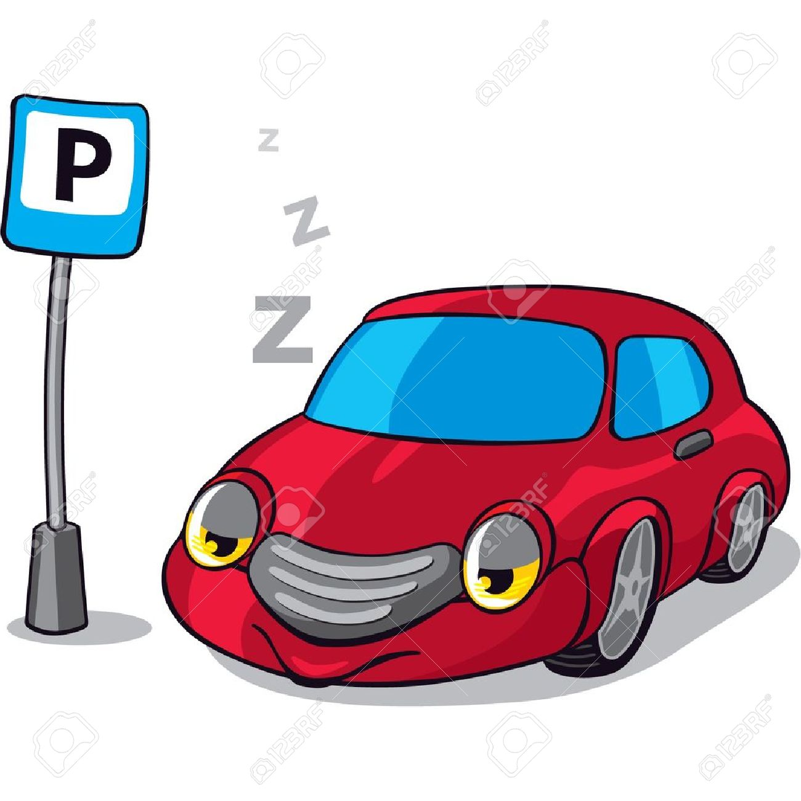

<!DOCTYPE html>
<html>
  <head>
    <title>Geolocation</title>
    <meta name="viewport" content="initial-scale=1.0, user-scalable=no">
    <meta charset="utf-8">
    <style>
      html, body, #map_canvas {
        height: 100%;
        width:100%;
        margin: 0px;
        padding: 0px
      }
    </style>
    <script type="text/javascript" src="jquery-latest.js"></script>
    <script type="text/javascript" src="http://maps.google.com/maps/api/js?sensor=true"></script>

    <script>

			
		   
		   // This is the minimum zoom level that we'll allow
		   var minZoomLevel = 17;
		   var lat =0;
		   var lng=0;
		   var address; 
		   var parkno;
		   var map;
		   var infowindow;
		   var parkedwindow;
		   var CLat;
		   var CLng;
		   var PLat;
		   var PLng;
		       var polyline = null; 
		       var path;
		       var directionsService;
		       var remo = 0;
		       var mappo = null;
		       var latlng1;
		       var latlng2;
		       var bounds;
		     if(navigator.geolocation) {
    navigator.geolocation.getCurrentPosition(function(position) {
             lat = position.coords.latitude;
			 lng = position.coords.longitude;
			 var geolocate = new google.maps.LatLng(position.coords.latitude, position.coords.longitude);
		   map = new google.maps.Map(document.getElementById('map_canvas'), {
			  zoom: minZoomLevel,
			  center: geolocate,
			  mapTypeId: google.maps.MapTypeId.ROADMAP
		   });			
	  AndroidFunction.complete('Completed');	
	  } , onError , { enableHighAccuracy: false });
	  
	   function showPosition(lati , longi, dist) {
	    if (infowindow) {
        infowindow.close();
    }
    if(dist != 0) {
    var feet = dist+" meter away";
    }else{
    feet = "";
    }
      CLat = lati;
	  CLng = longi;
     var infoWindowContent = '<div class="info_content">' +
        '' +
        '<h3 style="display:inline;"><br/>'+feet+'</h3>' +
    '</div>';
		var geolocate = new google.maps.LatLng(lati, longi);		
		 infowindow = new google.maps.InfoWindow({
		disableAutoPan:true, 
		map: map,
        position: geolocate,
        content: infoWindowContent
      });
      if(PLat != PLng) {
     bounds = new google.maps.LatLngBounds();
     latlng1 = new google.maps.LatLng(CLat,CLng);
      bounds.extend(latlng1);
      latlng2 = new google.maps.LatLng(PLat,PLng);
      bounds.extend(latlng2);
      map.fitBounds(bounds); 
      }
		}		
		function calcRoute() {
		var start = new google.maps.LatLng(CLat,CLng);
		var end = new google.maps.LatLng(PLat,PLng);
directionsService = new google.maps.DirectionsService(); 
var request = { 
  origin:      start, 
  destination: end, 
  travelMode:  google.maps.DirectionsTravelMode.DRIVING 
};  
directionsService.route(request, function(directionsResult, 
directionsStatus) { 
  if (directionsStatus == google.maps.DirectionsStatus.OK) {
    if(remo == 0){
polyline.setMap(null);
polyline = null;
}else{ 
if(polyline == null) {
    path = directionsResult.routes[0].overview_path;
       polyline = new google.maps.Polyline({
        strokeColor: "#DA2121",
        strokeOpacity: 1.0,
        strokeWeight: 2
    });
     $(path).each(function(index, item) { 
      polyline.getPath().push(item); 
    }); 
    polyline.setMap(map);
    }else{
    polyline.setMap(null);
polyline = null;
 path = directionsResult.routes[0].overview_path;
       polyline = new google.maps.Polyline({
        strokeColor: "#DA2121",
        strokeOpacity: 1.0,
        strokeWeight: 2
    }); 
     $(path).each(function(index, item) { 
      polyline.getPath().push(item); 
    }); 
    polyline.setMap(map);
    }
} 
}
 }); 
		}

		 function showParked(latit , longit, hours) {
	    if (parkedwindow) {
        parkedwindow.close(); 
    }
    PLat = latit;
	PLng = longit;
	remo = 1;
     var parkedwindowContent = '<div class="parked_content">' +
        '' +
        '<h3 style="display:inline;"><br/>'+hours+'</h3>' +
    '</div>';
		var parkgeolocate = new google.maps.LatLng(latit, longit);		
		 parkedwindow = new google.maps.InfoWindow({
        disableAutoPan:true,
		map:map, 
        position: parkgeolocate,
        content: parkedwindowContent
      });
      map.fitBounds(bounds); 
		}
		
		function RemoveParked() {
	    if (parkedwindow) {
        parkedwindow.close();
    }
	map.setZoom(17);
            remo = 0;
		}
		
			}else{
			alert("No Geolocation");
			}
						function onError() {
			 alert('code: ' + error.code + '\n' +
          'message: ' + error.message + '\n');
			}
    </script>
  </head>
  <body>
 <div id="map_canvas" style="background-color:#BDBDBD;"></div>
  </body>
</html>